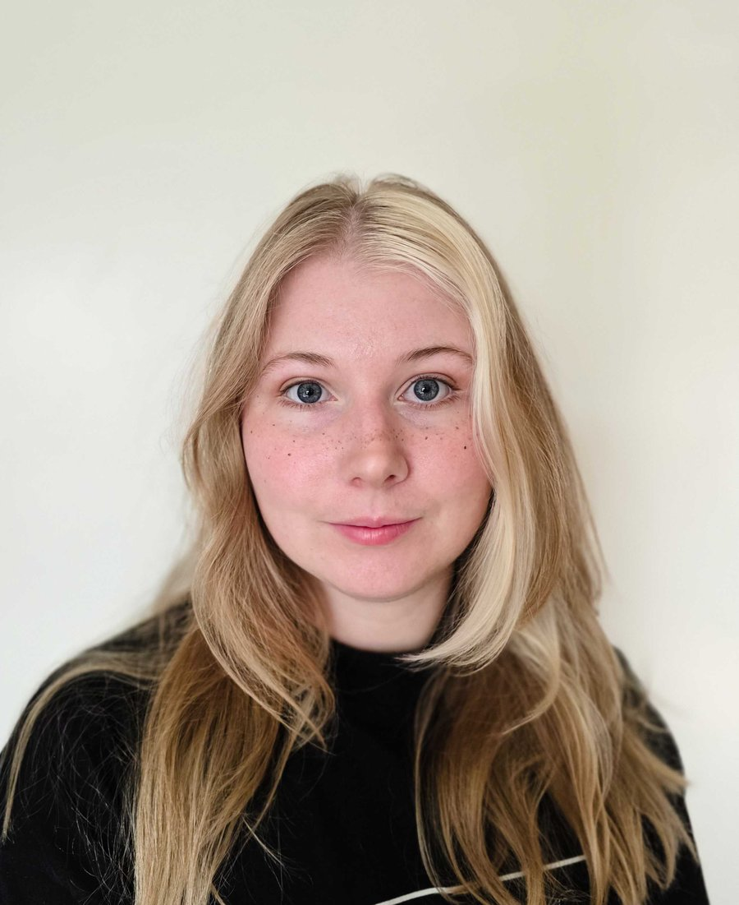

Robotteknologistuderende med fokus på autonome systemer, computer vision og kunstig intelligens.
Uddannelsen har givet mig specialiseret viden inden for robotteknologi, automation, autonome systemer og kunstig intelligens. Jeg har arbejdet med programmering, elektronik, computer vision, indlejrede systemer og modellering samt udvikling af løsninger, hvor software og hardware integreres i praksis. Derudover har uddannelsen haft et stærkt projektbaseret fokus, hvor vi hvert semester har arbejdet i teams om større tekniske projekter fra idé og analyse til udvikling, test og præsentation.